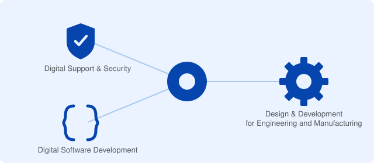

This hub links to a growing family of free, independent study-guide wikis - one for each T Level Technical Qualification taught at UTC Leeds. Each site is built the same way: an organised, searchable wiki covering the official specification, plus the same content as a plain file library in its own GitHub repository.
These are independent, unofficial student-made resources. They are not produced or endorsed by UTC Leeds, Pearson, City & Guilds, or the Institute for Apprenticeships and Technical Education (IfATE). Always check the official specification and your course provider for anything assessment-critical.

What is a T Level?
A T Level is a two-year, Level 3 technical study programme for 16-19 year olds in England - a technical alternative to A Levels or an Apprenticeship. Each T Level combines classroom-based theory and practical learning (the Technical Qualification) with a minimum 45-day industry placement with an employer, so students graduate with real workplace experience alongside their qualification.
T Levels are graded Pass, Merit, Distinction or Distinction* and are designed by employers to prepare students for skilled employment, an Apprenticeship, or further study, including university.
How each site works
Every linked site follows the same pattern, so once you know your way around one, you know your way around all of them:
- A searchable wiki with a sidebar directory tree, styled like a minimal encyclopedia - use the search bar or browse by topic.
- Content written as clear, plain-English revision notes, cross-referenced to the numbering used in the qualification's official specification.
- The exact same material also available as a plain markdown file library in the site's GitHub repository, for anyone who'd rather download or search it directly.
- A Help page and a Developers page on every site (linked from its sidebar and footer) explaining how to use it and how to contribute a fix.
About this project
Each site paraphrases and reorganises its qualification's official specification into a browsable, searchable wiki with a matching file library, so students can find exactly the topic they need for revision. Every site is unofficial and independently maintained - see each site's own "Sources and Further Reading" page for links to the real specification. New T Level sites are added to this hub as they're built.